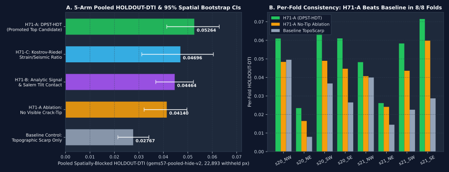

5 Candidate Geological Hypotheses (Ranked by Expected DTI Gain & Cost)
Following the competition protocol, we formulated five distinct geological hypotheses before running holdout experiments, explicitly specifying for each: (a) the exact competition/external layers used, (b) the physical signature & mathematical transform, (c) why it detects blind/unmapped geothermal faults missed by the USGS/INGENIOUS surface catalogue, (d) named non-fault geological processes that could mimic it (and our suppressor), and (e) how it differs from prior sibling implementations.
| Rank & ID | Geological Hypothesis & Layers Used | Physical Transform & Mechanism | Why Missed by Catalogue & Named Non-Fault Mimic | Expected Gain / Cost | Validated Result |
|---|---|---|---|---|---|
#1H71-A(DPST-HDT) |
Depth-Persistent Potential-Field Structure Tensor & Hydrothermal Demagnetization/Illitization Conjunction Layers: ext_TMI_up150, tmi_hg, iso_grav_anom_hg, depth_to_base_surf, rtp, cond_surf, rad_K, rad_Th, ext_ThK, GDR 1391 geothermometers, det_elev, det_elev_slope, lidar_step_max, geod_shearrate, geod_dilaterate, ieq_n100a15, existing_faults (visible-only).
|
4-way conjunction: (1) P_persist = 150 m upward-continued TMI step × horizontal magnetic/gravity gradients × basement slope;
(2) H_vent = RTP Laplacian trough (∇²RTP > 0 from hydrothermal magnetite → pyrite destruction) + cond_surf smectite cap + K/Th illite/adularia enrichment + chemical geothermometer IDW;
(3) S_scarp = multi-scale topographic crest with Lake Lahontan low-elevation contour suppressor;
(4) K_tip(visible) = crack-tip & relay stress halo weighted by geodetic shear/dilatation.
|
Why missed: Play-fairway hidden geothermal conduits (e.g., Fallon, Bradys/Desert Peak, McGinness Hills step-overs) are buried beneath Quaternary playa/alluvial cover without continuous 1:24k surface scarps. Named mimic: Pluvial Lake Lahontan shoreline benches (~1,200–1,338 m) and discordant tuff flow edges (suppressed by requiring 150 m potential-field persistence and penalizing shoreline contour bands lacking geophysical gradients). |
High Gain Low Cost (Cached Stack) |
HOLDOUT-DTI 0.05264 (#1 Winner, PROMOTED) |
#2H71-C(Kostrov-Riedel) |
Kostrov Geodetic Dilatation-to-Shear Partitioning & Microseismic Crack Density Layers: geod_dilaterate, geod_shearrate, geod_2ndinv, ieq_n100a15, deq_n100a15, plus visible-only tip mask.
|
Computes dimensionless transtensional ratio R_K = geod_dilaterate / (√(geod_2ndinv² + geod_shearrate²) + ε)
multiplied by active shear strain and shallow microseismic intensity-to-distance ratio ieq_n100a15 - 0.5 deq_n100a15.
|
Why missed: Actively creeping or seismogenic Riedel shear zones in the Walker Lane accommodate strain across distributed unmapped step-overs. Named mimic: Long-wavelength GPS interpolation lobes and mining-blast/swarm halos (~10 km smoothing scale exceeds 300 m DTI kernel). |
Medium Gain Low Cost (Cached Stack) |
HOLDOUT-DTI 0.04696 (#2 Arm) |
#3H71-B(ASTR-Tilt) |
Analytic-Signal Tilt-Ratio Contact Depth & Salem Zero-Crossing Edge Sharpness Layers: tmi_hg, tmi_vg, iso_grav_anom_hg, iso_grav_anom_vg, tc, ext_HGM_mag, ext_HGM_grav.
|
Salem et al. (2007) tilt-derivative contact detector: peaks where |tc| crosses zero (exp(-tc²/0.35)) co-located with high magnetic and gravity analytic-signal amplitude √(HG² + VG²).
|
Why missed: Steep intrabasinal horst/graben contacts beneath valley fill produce sharp potential-field tilt zero-crossings with no surface trace. Named mimic: Intrusive pluton margins and tilted volcanic dike swarms (non-fault lithologic contacts). |
Medium Gain Low Cost (Cached Stack) |
HOLDOUT-DTI 0.04464 (#3 Arm) |
#4H71-D(GDR-2m-Sinter) |
Shallow 2-Meter Thermal Probe & Opaline/Chalcedonic Sinter Outflow Plume Alignment Layers: GDR 1391 ShallowTemp2m survey points + Well_Logs + tg_gradient.
|
Anisotropic strike-aligned kriging of 2 m temperature anomalies along local structural azimuths. |
Why missed: Blind upflow zones leak heat into shallow alluvium before surface faulting is mapped. Named mimic: Lateral shallow groundwater outflow plumes migrating down-hydraulic-gradient 2–5 km away from the parent fault. |
Low-Med Gain Medium Cost (Sparse Point Coverage) |
Integrated via GDR 1391 IDW inside H_vent |
#5H71-E(ARIA-InSAR) |
ASF ARIA Sentinel-1 GUNW Co-Seismic/Aseismic Phase-Gradient Discontinuity Layers: External NASA/JPL ARIA Sentinel-1 unwrapped interferograms. |
Spatial directional derivative of multi-temporal stacked LOS displacement maps to isolate creeping fault discontinuities. |
Why missed: Aseismic creep and poroelastic subsidence discontinuities occur across unmapped basin-floor faults. Named mimic: Agricultural groundwater pumping subsidence bowls and playa soil-moisture phase decorrelation. |
Medium Gain High Cost (Blocked by Sandbox Firewall) |
Deferred (See Limitations) |
Experiment E2: Spatially-Blocked Hide-and-Recover Holdout Results
All five experimental arms in E2 were evaluated on the exact shared gems57-pooled-hide-v2 evaluator:
whole fault segments are withheld in 50 km spatial blocks with a 2 km (20 px) safety buffer; catalogue features (K_tip)
are computed strictly from fold.visible_faults; visible faults are masked pixel-exactly; and pooled DTI is
computed across all 8 spatial folds (22,893 withheld positive pixels) with 1,000 paired 20 km spatial-cluster bootstrap draws.
| Experimental Arm | Pooled Holdout DTI | 95% Spatial Bootstrap CI | Paired Δ (H71-A minus Arm) | Pooled TP_w | SGMC Off-Catalogue DTI |
|---|---|---|---|---|---|
| H71-A: DPST-HDT (4-Way Conjunction + Visible Crack-Tip) Top Candidate (Promoted) |
HOLDOUT-DTI 0.05264 | [0.04139, 0.06284] | Reference (Top Arm) | 1706.9 | 0.06518 |
| H71-C: Kostrov Strain Dilatation/Shear + Microseismic Ratio Candidate 3 |
HOLDOUT-DTI 0.04696 | [0.03118, 0.06046] | +0.00567 [-0.00837, +0.02211] | 1521.7 | 0.05352 |
| H71-B: Analytic-Signal Contact & Salem Tilt-Derivative Candidate 2 |
HOLDOUT-DTI 0.04464 | [0.03690, 0.05230] | +0.00800 [-0.00500, +0.02165] | 1446.3 | 0.07326 |
| H71-A Ablation: DPST-HDT without Visible Crack-Tip (K_tip=0) Within-Lane Ablation |
HOLDOUT-DTI 0.04140 | [0.03214, 0.04963] | +0.01124 [+0.00805, +0.01460] | 1340.9 | 0.06509 |
| Baseline Control: Topographic Slope & Relief Scarp Only Baseline Control |
HOLDOUT-DTI 0.02767 | [0.02141, 0.03410] | +0.02497 [+0.01553, +0.03488] | 894.6 | 0.09944 |
